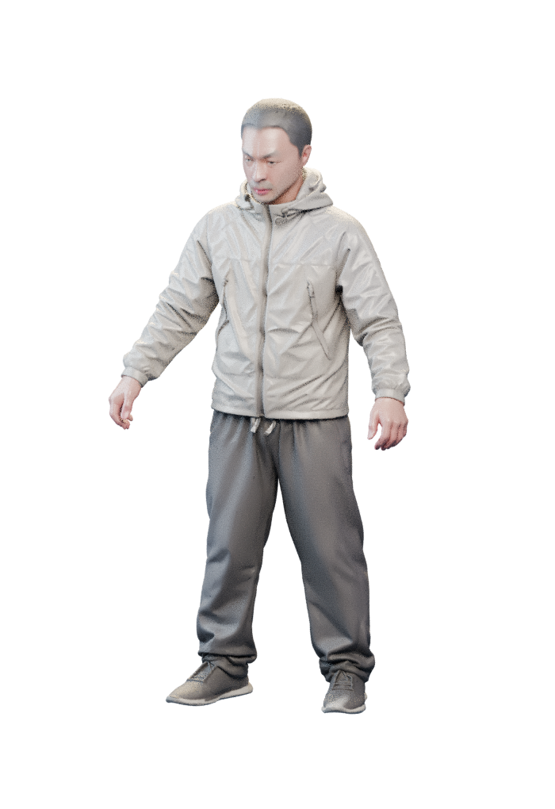
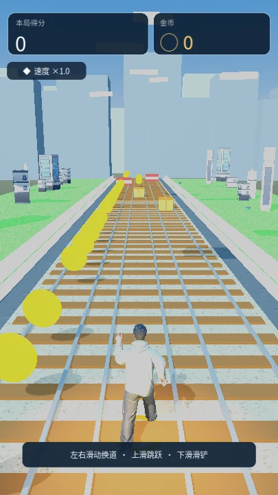
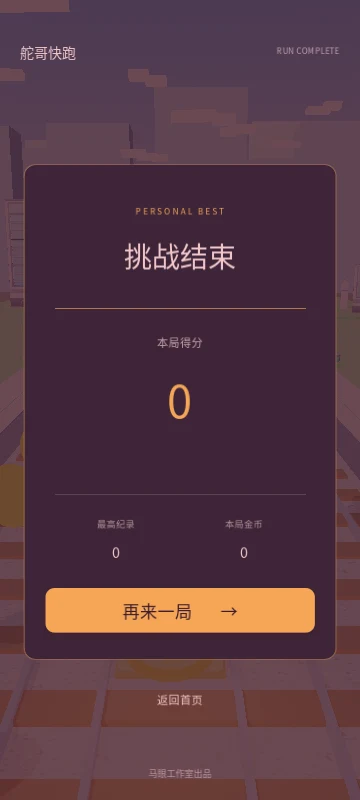

CITY RUN / ANDROID
城市那么大，
这一跑，听你的。
舵哥快跑↗
三条跑道，一路向前。
闪过障碍，收下金币，刷新自己的最好成绩。
Android 7.0 及以上 · 64 位 ARM 设备
本次为测试体验版，欢迎上手试跑。
READY TO RUN.

01 / 都市冲刺无限跑酷 ↗
三轨闪避✦跳跃 · 滑铲✦金币收集✦挑战最高分✦随时开跑
01 / FIRST LOOK
跑进这座城市。
从第一步，到下一次破纪录。
以下为当前测试版 Web 实机截图，安卓效果以设备为准。


- 01
下载安装包
点击“下载 Android 测试版”。如果在微信或 QQ 内无法下载，请选择“在浏览器中打开”。
- 02
安装到手机
打开下载的 APK。若系统询问，可仅为当前浏览器允许“安装未知应用”，安装后再关闭该权限。
- 03
点开游戏，开始奔跑
左右滑动换道，上滑跳跃，下滑滑铲。前方的路，交给你了。
03 / RELEASE NOTES
现在，先跑起来。
这是开发测试版，尚未完成 Android 真机验证。当前 Web 画面存在偏白问题，安装包暂用默认图标。欢迎记录你遇到的设备兼容或操作问题。
- 当前版本
- 0.1-dev · 测试版
- 更新日期
- 2026.10.29
- 安装包
- 71.1 MiB · ARM64 · Android 7.0+
- SHA-256 文件校验
b028bbd1e9d839c8f4a31d9bccd2f3ac27ee9676397231cf1f93549ac0b6f6d0
下一次最好成绩，
从这一次开始。